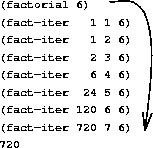
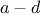
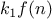
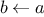
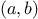
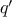
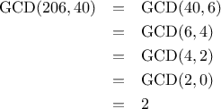

We have now considered the elements of programming: We have used
primitive arithmetic operations, we have combined these operations, and
we have abstracted these composite operations by defining them as compound
functions.
But that is not enough to enable us to say that we know
how to program. Our situation is analogous to that of someone who has
learned the rules for how the pieces move in chess but knows nothing
of typical openings, tactics, or strategy. Like the novice chess
player, we don’t yet know the common patterns of usage in the domain.
We lack the knowledge of which moves are worth making (which
functions
are worth defining). We lack the experience to predict the
consequences of making a move (executing a
function).
The ability to visualize the consequences of the actions under
consideration is crucial to becoming an expert programmer, just as it
is in any synthetic, creative activity. In becoming an expert
photographer, for example, one must learn how to look at a scene and
know how dark each region will appear on a print for each possible
choice of exposure and development conditions. Only then can one
reason backward, planning framing, lighting, exposure, and development
to obtain the desired effects. So it is with programming, where we
are planning the course of action to be taken by a process and where
we control the process by means of a program. To become experts, we
must learn to visualize the processes generated by various types of
functions.
Only after we have developed such a skill can we learn
to reliably construct programs that exhibit the desired behavior.
A function
is a pattern for the local evolution of a
computational process. It specifies how each stage of the process is
built upon the previous stage. We would like to be able to make
statements about the overall, or global, behavior of a
process whose local evolution has been specified by a
function.
This is very difficult to do in general, but we can at least try to
describe some typical patterns of process evolution.
In this section we will examine some common “shapes” for processes
generated by simple
functions.
We will also investigate the
rates at which these processes consume the important computational
resources of time and space.
The
functions
we will consider
are very simple. Their role is like that played by test patterns in
photography: as oversimplified prototypical patterns, rather than
practical examples in their own right.
We begin by considering the factorial function, defined by
There are many ways to compute factorials. One way is to make use of
the observation that
is equal to
times
for
any positive integer
:
Thus, we can compute
by computing
and multiplying the
result by
. If we add the stipulation that 1!
is equal to 1,
this observation translates directly into a
function:
function factorial(n) {
if (n === 1)
return 1;
else return n * factorial(n-1);
}

|
Figure 1.
3 A linear recursive process for computing 6!.
|
Instead of a conditional statement, we can use a conditional expression
in the body of the function, which leads to this definition of the
factorial function:
function factorial(n) {
return n === 1 ? 1 : n * factorial(n-1);
}
In this version, the body of the function consists of only a
return
statement, and thus we can use the substitution model of
section
1.1.5 to watch the
function in action
computing 6!, as shown in figure
1.3.
Now let’s take a different perspective on computing factorials. We
could describe a rule for computing
by
specifying that we
first multiply 1 by 2, then multiply the result by 3, then by 4,
and so on until we reach
.
More formally, we maintain a running product, together with a counter
that counts from 1 up to
. We can describe the computation by
saying that the counter and the product simultaneously change from one
step to the next according to the rule
product counter product
counter  counter 1
counter 1
and stipulating that
is the value of the product when
the counter exceeds
.
Once again, we can recast our description as a
function
for computing
factorials:
1
function factorial(n) {
return fact_iter(1,1,n);
}
function fact_iter(product,counter,max_count) {
if (counter > max_count)
return product;
else return fact_iter(counter*product,
counter+1,
max_count);
}
|

|
Figure 1.
4 A linear iterative process for computing .
|
As before, we can define an alternative version whose body only consists of
a
return statement.
function factorial(n) {
return fact_iter(1,1,n);
}
function fact_iter(product,counter,max_count) {
return counter > max_count
? product
: fact_iter(counter*product,
counter+1,
max_count);
}
Figure
1.4
visualizes the application of the substitution model
for computing
.
Compare the two processes. From one point of view, they seem hardly
different at all. Both compute the same mathematical function on the
same domain, and each requires a number of steps proportional to
to compute . Indeed, both processes even carry out the same
sequence of multiplications, obtaining the same sequence of partial
products. On the other hand, when we consider the
“shapes” of the
two processes, we find that they evolve quite differently.
Consider the first process. The substitution model reveals a shape of
expansion followed by contraction, indicated by the arrow in
figure
1.3. The expansion occurs as the
process builds up a chain of
deferred operations (in this case,
a chain of multiplications). The contraction occurs as
the operations are
actually performed. This type of process, characterized by a chain of
deferred operations, is called a
recursive process. Carrying
out this process requires that the interpreter keep track of the
operations to be performed later on. In the computation of

,
the length of the chain of deferred multiplications, and hence the amount
of information needed to keep track of it,
grows linearly with
(is proportional to

), just like the number of steps.
Such a process is called a
linear recursive process.
By contrast, the second process does not grow and shrink. At each
step, all we need to keep track of, for any
, are the current
values of the variables
product,
counter, and
max_count. We call this an
iterative process. In general, an
iterative process is one whose state can be summarized by a fixed
number of
state variables, together with a fixed rule that
describes how the state variables should be updated as the process
moves from state to state and an (optional) end test that specifies
conditions under which the process should terminate. In computing
, the number of steps required grows linearly with

. Such a process is
called a
linear iterative process.
The contrast between the two processes can be seen in another way. In
the iterative case, the program variables provide a complete
description of the state of the process at any point. If we stopped
the computation between steps, all we would need to do to resume the
computation is to supply the interpreter with the values of the three
program variables. Not so with the recursive process. In this case
there is some additional “hidden” information, maintained by the
interpreter and not contained in the program variables, which
indicates “where the process is” in negotiating the chain of
deferred operations. The longer the chain, the more information must
be maintained.
2
In contrasting iteration and recursion, we must be careful not to
confuse the notion of a
recursive process with the notion of a
recursive
function.
When we describe a function as recursive,
we are referring to the syntactic fact that the function definition
refers (either directly or indirectly) to the function itself. But
when we describe a process as following a pattern that is, say,
linearly recursive, we are speaking about how the process evolves, not
about the syntax of how a function is written. It may seem
disturbing that we refer to a recursive function such as
fact_iter
as generating an iterative process. However, the process
really is iterative: Its state is captured completely by its three
state variables, and an interpreter need keep track of only three
variables in order to execute the process.
One reason that the distinction between process and function
may be
confusing is that most programming languages—including
JavaScript—are designed in such a way that the
interpretation of any recursive function consumes an amount of memory
that grows with the number of function calls, even when the process
described is, in principle, iterative. As a consequence, they
can describe iterative processes only by resorting to
special-purpose
“looping constructs” such as
while and
for, which we will encounter
in chapter 3. The language Scheme
does not share this defect. It will
execute an iterative process in constant space, even if the iterative
process is described by a recursive function. An implementation with
this property is called
tail-recursive. With a tail-recursive
implementation,
iteration can be expressed using the ordinary
function call mechanism, so that special iteration constructs are
useful only as
syntactic sugar.
4
Chapter 5 describes a tail-recursive implementation of a subset of JavaScript.
Exercise 1.9.
Each of the following two functions defines a method for adding two
positive integers in terms of the functions
inc,
which increments its argument by 1, and
dec, which decrements
its argument by 1.
function plus(a,b) {
return a === 0 ? b : inc(plus(dec(a),b));
}
function plus(a,b) {
return a === 0 ? b : plus(dec(a),inc(b));
}
Using the substitution model, illustrate the process generated by each
function in evaluating
plus(4,5);. Are these processes iterative or recursive?
Exercise 1.10.
The following function computes a mathematical function called
Ackermann’s function.
function A(x,y) {
if (y === 0)
return 0;
else if (x === 0)
return 2 * y;
else if (y === 1)
return 2;
else return A(x - 1, A(x, y - 1));
}
What are the values of the following expressions?
A(1,10);
A(2,4);
A(3,3);
Consider the following functions, where
A is the function
defined above:
function f(n) {
return A(0,n);
}
function g(n) {
return A(1,n);
}
function h(n) {
return A(2,n);
}
function k(n) {
return 5 * n * n;
}
Give concise mathematical definitions for the functions computed by
the functions
f,
g, and
h for positive integer
values of
. For example,
(k n) computes
.
Another common pattern of computation is called
tree recursion.
As an example, consider computing the sequence of
Fibonacci numbers,
in which each number is the sum of the preceding two:
In general, the Fibonacci numbers can be defined by the rule
We can immediately translate this definition into a recursive
function for computing Fibonacci numbers:
function fib(n) {
if (n === 0)
return 0;
else if (n === 1)
return 1;
else return fib(n - 1) + fib(n - 2);
}

|
Figure 1.
5 The tree-recursive process generated in computing
fib(5).
|
Consider the pattern of this computation. To compute
fib(5),
we compute
fib(4)
and
fib(3).
To compute
fib(4),
we compute
fib(3)
and
fib(2). In general, the evolved
process looks like a tree, as shown in figure
1.5.
Notice that the branches split into two at each level (except at the
bottom); this reflects the fact that the
fib
function
calls itself twice each time it is invoked.
This
function
is instructive as a prototypical tree recursion, but it
is a terrible way to compute Fibonacci numbers because it does so much
redundant computation. Notice in figure
1.5 that
the entire computation of
(fib 3)—almost half the work—is
duplicated. In fact, it is not hard to show that the number of times
the function will compute
(fib 1) or
(fib 0) (the number
of leaves in the above tree, in general) is precisely
. To get an idea of how bad this is, one can show that the
value of
grows exponentially with
. More precisely
(see exercise
1.13),
is the closest
integer to
, where
is the
golden ratio, which satisfies the equation
Thus, the process uses a number of steps that grows exponentially
with the input. On the other hand, the space required grows only
linearly with the input, because we need keep track only of which
nodes are above us in the tree at any point in the computation. In
general, the number of steps required by a tree-recursive process will be
proportional to the number of nodes in the tree, while the space
required will be proportional to the maximum depth of the tree.
We can also formulate an iterative process for computing the
Fibonacci numbers. The idea is to use a pair of integers
and
,
initialized to
and
,
and to repeatedly apply the simultaneous
transformations
It is not hard to show that, after applying this transformation
times,
and
will be equal, respectively, to
and
. Thus, we can compute Fibonacci numbers iteratively using
the function
function fib(n) {
return fib_iter(1,0,n);
}
function fib_iter(a,b,count) {
if (count === 0)
return b;
else return fib_iter(a + b,a,count - 1);
}
This second method for computing

is a linear iteration. The
difference in number of steps required by the two methods—one linear in
,
one growing as fast as
itself—is enormous, even for
small inputs.
One should not conclude from this that tree-recursive processes are
useless. When we consider processes that operate on hierarchically
structured data rather than numbers, we will find that tree recursion
is a natural and powerful tool.
5 But even in numerical operations,
tree-recursive processes can be useful in helping us to understand and
design programs. For instance, although the first
fib
function
is much less efficient than the second one, it is more
straightforward, being little more than a translation into
JavaScript
of the
definition of the Fibonacci sequence. To formulate the iterative
algorithm required noticing that the computation could be recast as an
iteration with three state variables.
Example: Counting change
It takes only a bit of cleverness to come up with the iterative
Fibonacci algorithm. In contrast, consider the
following problem: How many different ways can we make change of ,
given half-dollars, quarters, dimes, nickels, and pennies? More
generally, can we write a
function
to compute the number of ways to change any given amount of money?
This problem has a simple solution as a recursive
function. Suppose
we think of the types of coins available as arranged in some order.
Then the following relation holds:
The number of ways to change amount
using
kinds of coins equals
-
the number of ways to change amount using all but the first
kind of coin, plus
-
the number of ways to change amount  using all kinds of
coins, where is the denomination of the first kind of coin.
To see why this is true, observe that the ways to make change can be
divided into two groups: those that do not use any of the first kind
of coin, and those that do. Therefore, the total number of ways to
make change for some amount is equal to the number of ways to make
change for the amount without using any of the first kind of coin,
plus the number of ways to make change assuming that we do use the
first kind of coin. But the latter number is equal to the number of
ways to make change for the amount that remains after using a coin of
the first kind.
Thus, we can recursively reduce the problem of changing a given amount
to the problem of changing smaller amounts using fewer kinds of coins.
Consider this reduction rule carefully, and convince yourself that we
can use it to describe an algorithm if we specify the following
degenerate cases:
6
-
If
 is exactly 0, we should count that as 1 way to make change.
is exactly 0, we should count that as 1 way to make change.
-
If is less than 0, we should count that as 0 ways to make change.
- If is 0, we should count that as 0 ways to make change.
We can easily translate this description into a recursive
function:
function count_change(amount) {
return cc(amount,5);
}
function cc(amount,kinds_of_coins) {
if (amount === 0)
return 1;
else if (amount < 0 ||
kinds_of_coins === 0)
return 0;
else return cc(amount,kinds_of_coins - 1)
+
cc(amount - first_denomination(
kinds_of_coins),
kinds_of_coins);
}
function first_denomination(kinds_of_coins) {
switch(kinds_of_coins) {
case 1: return 1;
case 2: return 5;
case 3: return 10;
case 4: return 25;
case 5: return 50;
}
}
(The
first_denomination
function
takes as input the number of
kinds of coins available and returns the denomination of the first
kind. Here we are thinking of the coins as arranged in order from
largest to smallest, but any order would do as well.) We can now
answer our original question about changing a dollar:
count_change(100);
The function
count_change
generates a tree-recursive process with
redundancies similar to those in our first implementation of
fib.
(It will take quite a while for that 292 to be computed.) On
the other hand, it is not obvious how to design a better algorithm
for computing the result, and we leave this problem as a challenge.
The observation that a
tree-recursive process may be highly
inefficient but often easy to specify and understand has led people to
propose that one could get the best of both worlds by designing a
“smart compiler” that could transform tree-recursive
functions
into more efficient
functions
that compute the same result.
7
Exercise 1.11.
A function
is defined by the rule that
if
and
if
. Write a JavaScript function that
computes

by means of a recursive process. Write a function that
computes

by means of an iterative process.
Exercise 1.12.
The following pattern of numbers is called
Pascal’s triangle.
The numbers at the edge of the triangle are all 1, and
each number inside the triangle is the sum of the two numbers
above it.
8
Write a function that computes elements of Pascal’s triangle by means
of a recursive process.
Exercise 1.13.
Prove that

is the closest integer to
,
where

. Hint: Let
. Use
induction and the definition of the Fibonacci numbers (see
section
1.2.2) to prove that
.
The previous examples illustrate that processes can differ
considerably in the rates at which they consume computational
resources. One convenient way to describe this difference is to use
the notion of
order of growth to obtain a gross measure of the
resources required by a process as the inputs become larger.
Let
be a parameter that measures the size of the problem,
and let
(

) be the amount
of resources the process requires for a problem
of size
. In our previous examples we took
to be the number
for which a given function is to be computed, but there are other
possibilities. For instance, if our goal is to compute an
approximation to the square root of a number, we might take

to be
the number of digits accuracy required. For matrix multiplication we
might take
to be the number of rows in the matrices.
In general there are a number of properties of the problem with respect to which
it will be desirable to analyze a given process.
Similarly,
(
)
might measure the number of internal storage registers used, the
number of elementary machine operations performed, and so on. In
computers that do only a fixed number of operations at a time, the
time required will be proportional to the number of elementary machine
operations performed.
We say that
has order of growth
, written
(pronounced “theta of
”), if there are
positive constants
and
independent of
such that
for any sufficiently large value of

. (In other
words, for large
,
the value
is sandwiched between

and

.)
For instance, with the linear recursive process for computing
factorial described in section
1.2.1 the
number of steps grows proportionally to the input
. Thus, the
steps required for this process grows as

. We also saw
that the space required grows as
.
For the
iterative
factorial function, the number of steps is still
.
A properly tail-recursive implementation of Scheme will require space of
—that is,
constant space—whereas JavaScript's space requirement for the iterative factorial function
is still
.
10
The
tree-recursive Fibonacci computation requires
steps and space
, where
is the
golden ratio described in section
1.2.2.
Orders of growth provide only a crude description of the behavior of a
process. For example, a process requiring
steps and a process
requiring
steps and a process requiring
steps
all have
order of growth. On the other hand, order of
growth provides a useful indication of how we may expect the behavior
of the process to change as we change the size of the problem. For a
(linear) process, doubling the size will roughly double the amount
of resources used. For an
exponential process, each increment in
problem size will multiply the resource utilization by a constant
factor. In the remainder of section
1.2
we will examine two
algorithms whose order of growth is
logarithmic, so that doubling the
problem size increases the resource requirement by a constant amount.
Exercise 1.14.
Draw the tree illustrating the process generated by the
count_change
function
of section
1.2.2 in making
change for 11 cents. What are the orders of growth of the space and
number of steps used by this process as the amount to be changed
increases?
Exercise 1.15.
The sine of an angle (specified in
radians) can be computed by making use of the approximation
if
is
sufficiently small, and the trigonometric identity
to reduce the size of the argument of
. (For
purposes of this exercise an angle is considered “sufficiently
small” if its magnitude is not greater than 0.1 radians.) These
ideas are incorporated in the following
functions:
function cube(x) {
return x * x * x;
}
function p(x) {
return 3 * x - 4 * cube(x);
}
function sine(angle) {
if (! (abs(angle) > 0.1))
return angle;
else return p(sine(angle / 3.0));
}
- How many times is the function p
applied when (sine 12.15) is evaluated?
-
What is the order of growth in space and number of steps (as a
function of ) used by the process generated by the sine
function when (sine a) is evaluated?
Consider the problem of computing the exponential of a given number.
We would like a function that takes as arguments a base
and a
positive integer exponent
and computes
. One way to do this
is via the recursive definition
which translates readily into the function
function expt(b,n) {
if (n === 0)
return 1;
else return b * expt(b, n - 1);
}
This is a linear recursive process, which requires
steps
and
space. Just as with factorial, we can readily
formulate an equivalent linear iteration:
function expt(b,n) {
return expt_iter(b,n,1);
}
function expt_iter(b,counter,product) {
if (counter === 0)
return product;
else return expt_iter(b,
counter - 1,
b * product);
}
This version requires

steps and
space.
We can compute exponentials in fewer steps by using successive
squaring. For instance, rather than computing
as
we can compute it using three multiplications:
This method works fine for exponents that are powers of 2. We can
also take advantage of successive squaring in computing exponentials
in general if we use the rule
We can express this method as a function:
function fast_expt(b,n) {
if (n === 0)
return 1;
else if (is_even(n))
return square(fast_expt(b, n / 2));
else return b * fast_expt(b, n - 1);
}
function is_even(n) {
return n % 2 === 0;
}
where the predicate to test whether an integer is even is defined in terms of
the
operator
%, which computes the remainder after integer division, by
function is_even(n) {
return n % 2 === 0;
}
The process evolved by
fast_expt
grows logarithmically with
in both space and number of steps. To see this, observe that
computing
using
fast_expt
requires only one more
multiplication than computing
. The size of the exponent we can
compute therefore doubles (approximately) with every new
multiplication we are allowed. Thus, the number of multiplications
required for an exponent of

grows about as fast as the logarithm
of
to the base 2. The process has

growth.
11
The difference between
growth and
growth
becomes striking as
becomes large. For example,
fast_expt
for
requires only 14
multiplications.
12
It is also possible to use the idea of
successive squaring to devise an iterative algorithm that computes
exponentials with a logarithmic number of steps
(see exercise
1.16), although, as is often
the case with iterative algorithms, this is not written down so
straightforwardly as the recursive algorithm.
13
Exercise 1.16.
Design a function that evolves an iterative exponentiation process
that uses successive squaring and uses a logarithmic number of steps,
as does
fast_expt.
(Hint: Using the observation that
, keep, along with the exponent
and the
base
, an additional state variable
, and define the state
transformation in such a way that the product
is unchanged
from state to state. At the beginning of the process

is taken to
be 1, and the answer is given by the value of

at the end of the
process. In general, the technique of defining an
invariant
quantity that remains unchanged from state to state is a powerful way
to think about the
design of iterative algorithms.)
Exercise 1.17.
The exponentiation algorithms in this section are based on performing
exponentiation by means of repeated multiplication. In a similar way,
one can perform integer multiplication by means of repeated addition.
The following multiplication function (in which it is assumed that
our language can only add, not multiply) is analogous to the
expt function:
function times(a,b) {
if (b === 0)
return 0;
else return a + a * (b - 1);
}
This algorithm takes a number of steps that is linear in
b.
Now suppose we include, together with addition, operations
double,
which doubles an integer, and
halve, which divides an (even)
integer by 2. Using these, design a multiplication function analogous
to
fast_expt
that uses a logarithmic number of steps.
Exercise 1.18.
Using the results of exercises
1.16
and
1.17, devise a function that generates an iterative
process for multiplying two integers in terms of adding, doubling, and
halving and uses a logarithmic number of steps.
14
Exercise 1.19.
There is a clever algorithm for computing the Fibonacci numbers in
a logarithmic number of steps.
Recall the transformation of the state variables
and
in the
fib_iter
process of
section
1.2.2:
and
. Call this transformation
, and observe that applying
over
and over again
times, starting with 1 and 0, produces the pair
and
. In other words, the Fibonacci
numbers are produced by applying
, the
th power of the
transformation
, starting with the pair
. Now consider
to be the special case of
and
in a family of
transformations
, where

transforms the pair

according to
and
. Show
that if we apply such a transformation
twice, the effect is
the same as using a single transformation
of the same form,
and compute
and
 in terms of
and
. This gives us an
explicit way to square these transformations, and thus we can compute
using successive squaring, as in the
fast_expt
function. Put this all together to complete the following function,
which runs in a logarithmic number of
steps:
15
The greatest common divisor (GCD) of two integers
and is
defined to be the largest integer that divides both and
with no remainder.
For example, the GCD of 16 and 28 is 4. In chapter 2,
when we investigate how to implement rational-number arithmetic, we
will need to be able to compute GCDs in order to reduce
rational numbers to lowest terms. (To reduce a rational number to
lowest terms, we must divide both the numerator and the denominator by their
GCD. For example, 16/28 reduces to 4/7.) One way to find the
GCD of two integers is to factor them and search for common
factors, but there is a famous algorithm that is much more efficient.
The idea of the algorithm is based on the observation that,
if
is
the remainder when
is divided by
, then the common divisors of
and
are
precisely the same as the common divisors of
and
. Thus, we can use the equation
to successively reduce the problem of computing a GCD to the
problem of computing the GCD of smaller and smaller pairs of
integers. For example,

reduces GCD(206,40) to GCD(2,0), which is 2. It is
possible to show that starting with any two positive integers and
performing repeated reductions will always eventually produce a pair
where the second number is 0. Then the GCD is the other
number in the pair. This method for computing the GCD is
known as
Euclid’s Algorithm.
16
It is easy to express Euclid’s Algorithm as a
function:
function gcd(a,b) {
return b === 0 ? a : gcd(b, a % b);
}
This generates an iterative process, whose number of steps grows as
the logarithm of the numbers involved.
Exercise 1.20.
For a change, we are using a conditional
expression in the
gcd function. Write a
version of
gcd that uses a conditional
statement instead!
The fact that the number of steps required by Euclid’s Algorithm has
logarithmic growth bears an interesting relation to the Fibonacci
numbers:
Lamé’s Theorem: If Euclid’s Algorithm requires
steps to
compute the GCD of some pair, then the smaller number in the pair
must be greater than or equal to the th Fibonacci
number.17
We can use this theorem to get an order-of-growth estimate for Euclid’s
Algorithm. Let
be the smaller of the two inputs to the
function.
If the process takes
steps, then we must have

. Therefore
the number of steps
grows as the logarithm (to the base
) of
.
Hence, the order of growth is
.
Exercise 1.21.
The process that a
function
generates is of course dependent on the
rules used by the interpreter. As an example, consider the iterative
gcd
function
given above.
Suppose we were to interpret this
function
using normal-order
evaluation, as discussed in section
1.1.5.
(The normal-order-evaluation rule for
if is described in
exercise
1.5.)
Using the
substitution method (for normal order), illustrate the process
generated in evaluating
gcd(206,40)
and indicate the
remainder operations that are actually performed.
How many
remainder operations are actually performed
in the normal-order evaluation of
gcd(206,40)?
In the applicative-order evaluation?
This section describes two methods for checking the primality of an
integer , one with order of growth , and a
“probabilistic” algorithm with order of growth . The
exercises at the end of this section suggest programming
projects based on these algorithms.
Searching for divisors
Since ancient times, mathematicians have been fascinated by problems
concerning prime numbers, and many people have worked on the problem
of determining ways to test if numbers are prime. One way
to test if a number is prime is to find the number’s divisors. The
following program finds the smallest integral divisor (greater than 1)
of a given number

. It does this in a straightforward way, by
testing
for divisibility by successive integers starting with 2.
function smallest_divisor(n) {
return find_divisor(n,2);
}
function find_divisor(n,test_divisor) {
if (square(test_divisor) > n)
return n;
else if (divides(test_divisor,n))
return test_divisor;
else return find_divisor(n, test_divisor + 1);
}
function divides(a,b) {
return b % a === 0;
}
We can test whether a number is prime as follows:

is prime if
and only if

is its own smallest divisor.
function is_prime(n) {
return n === smallest_divisor(n);
}
The end test for
find_divisor
is based on the fact that if
is not prime it must have a divisor less than or equal to
.
18
This means that the algorithm need only test divisors between 1 and
. Consequently, the number of steps required to identify
as prime will have order of growth
.
The Fermat test
The
primality test is based on a result from number
theory known as Fermat’s Little
Theorem.
19
Fermat’s Little Theorem:
If is a prime number and
is any positive integer less than
, then raised to the
th power is congruent to
modulo .
(Two numbers are said to be
congruent modulo if
they both have the same remainder when divided by

. The
remainder of a number
when divided by
is also referred to as
the
remainder of modulo , or simply as
modulo .)
If
is not prime, then, in general, most of the numbers
will not
satisfy the above relation. This leads to the following algorithm for
testing primality: Given a number
, pick a
random number
and
compute the remainder of
modulo

. If the result is not equal to
, then
is certainly not prime. If it is
, then chances are good
that
is prime. Now pick another random number
and test it with the
same method. If it also satisfies the equation, then we can be even more
confident that
is prime. By trying more and more values of
, we can
increase our confidence in the result. This algorithm is known as the
Fermat test.
To implement the Fermat test, we need a function that computes the
exponential of a number modulo another number:
function expmod(base,exp,m) {
if (exp === 0)
return 1;
else if (is_even(exp))
return square(expmod(base,exp/2,m)) % m;
else return (base * expmod(base,exp - 1,m)) % m;
}
This is very similar to the
fast_expt
function of
section
1.2.4. It uses successive squaring, so
that the number of steps grows logarithmically with the
exponent.
20
The Fermat test is performed by choosing at random a number
between 1 and
inclusive and checking whether the remainder
modulo
of the

th power of
is equal to

. The random
number
is chosen using the function
random, which we assume is
included as a primitive in Scheme.
The function
random
returns a
nonnegative integer less than its integer input. Hence, to obtain a random
number between 1 and
,
we call
random with an input of
and add 1 to the result:
function fermat_test(n) {
function try_it(a) {
return expmod(a,n,n) === a;
}
return try_it(1 + random(n - 1));
}
The following
function
runs the test a given number of times, as
specified by a parameter. Its value is true if the test succeeds
every time, and false otherwise.
function fermat_test(n) {
function try_it(a) {
return expmod(a,n,n) === a;
}
return try_it(1 + random(n - 1));
}
function fast_is_prime(n,times) {
if (times === 0)
return true;
else if (fermat_test(n))
return fast_is_prime(n, times - 1);
else return false;
}
Probabilistic methods
The Fermat test differs in character from most familiar algorithms, in
which one computes an answer that is guaranteed to be correct. Here,
the answer obtained is only probably correct. More precisely, if
ever fails the Fermat test, we can be certain that
is not prime.
But the fact that

passes the test, while an extremely strong
indication, is still not a guarantee that
is prime. What we would
like to say is that for any number

, if we perform the test enough
times and find that
always passes the test, then the probability
of error in our primality test can be made as small as we like.
Unfortunately, this assertion is not quite correct. There do exist
numbers that fool the Fermat test: numbers

that are not prime and
yet have the property that
is congruent to
modulo
for
all integers
. Such numbers are extremely rare, so the Fermat
test is quite reliable in practice.
21
There are variations of the Fermat test that cannot be fooled. In
these tests, as with the Fermat method, one tests the primality of an
integer
by choosing a random integer
and checking some
condition that depends upon
and
. (See
exercise
1.29 for an example of such a test.) On the
other hand, in contrast to the Fermat test, one can prove that, for
any
, the condition does not hold for most of the integers
unless
is prime. Thus, if
passes the test for some random
choice of
, the chances are better than even that
is prime. If

passes the test for two random choices of
, the chances are better
than 3 out of 4 that
is prime. By running the test with more and
more randomly chosen values of
we can make the probability of
error as small as we like.
The existence of tests for which one can prove that the chance of
error becomes arbitrarily small has sparked interest in algorithms of
this type, which have come to be known as
probabilistic
algorithms. There is a great deal of research activity in this area,
and probabilistic algorithms have been fruitfully applied to many
fields.
22
Exercise 1.22.
Use the
smallest_divisor
function
to find the smallest divisor
of each of the following numbers: 199, 1999, 19999.
Exercise 1.23.
Assume that our JavaScript interpreter defines a primitive called
runtime
that returns an integer that specifies the amount of time the system
has been running (measured, for example, in microseconds). The
following
timed_prime_test
function,
when called with an
integer
, prints
and
checks to see if

is prime.
If
is
prime, the
function
prints three asterisks followed by the amount of time
used in performing the test.
function timed_prime_test(n) {
newline();
display(n);
start_prime_test(n,runtime());
}
function start_prime_test(n,start_time) {
if (is_prime(n))
return report_prime(runtime() - start_time);
}
function report_prime(elapsed_time) {
print(" *** ");
display(elapsed_time);
}
Using this
function,
write a
function
search_for_primes
that checks the primality of consecutive odd integers in a specified range.
Use your
function
to find the three smallest primes larger than 1000;
larger than 10,000; larger than 100,000; larger than 1,000,000. Note
the time needed to test each prime. Since the testing algorithm has
order of growth of
,
you should expect that testing
for primes around 10,000 should take about
times as long
as testing for primes around 1000. Do your timing data bear this out?
How well do the data for 100,000 and 1,000,000 support the
prediction? Is your result compatible with the notion that programs
on your machine run in time proportional to the number of steps
required for the computation?
Exercise 1.24.
The
smallest_divisor
function
shown at the start of this section
does lots of needless testing: After it checks to see if the
number is divisible by 2 there is no point in checking to see if
it is divisible by any larger even numbers. This suggests that the
values used for
test_divisor
should not be 2, 3, 4, 5, 6, …
but rather 2, 3, 5, 7, 9, ….
To implement this
change, define a
function
next that returns 3 if its input is
equal to 2 and otherwise returns its input plus 2.
Modify the
smallest_divisor
function
to use
next(test_divisor)
instead of
test_divisor + 1.
With
timed_prime_test
incorporating this modified version of
smallest_divisor,
run the
test for each of the 12 primes found in
exercise
1.23.
Since this modification halves the
number of test steps, you should expect it to run about twice as fast.
Is this expectation confirmed? If not, what is the observed ratio of
the speeds of the two algorithms, and how do you explain the fact that
it is different from 2?
Exercise 1.25.
Modify the
timed_prime_test
function
of exercise
1.23 to use
fast_is_prime
(the Fermat method), and test each of the 12 primes you found in that
exercise. Since the Fermat test has
growth, how would you expect the time to test primes near 1,000,000 to compare
with the time needed to test primes near 1000? Do your data bear this
out? Can you explain any discrepancy you find?
Exercise 1.26.
Alyssa P. Hacker complains that we went to a lot of extra work in
writing
expmod.
After all, she says, since we already know how
to compute exponentials, we could have simply written
function expmod(base,exp,m) {
return fast_expt(base,exp) % m;
}
Is she correct?
Would this
function
serve as well for our fast prime tester? Explain.
Exercise 1.27.
Louis Reasoner is having great difficulty doing
exercise
1.25.
His
fast_is_prime
test seems to run more slowly than his
is_prime
test.
Louis calls his friend Eva Lu Ator over to help. When they examine Louis’s code, they
find that he has rewritten the
expmod
function
to use an
explicit multiplication, rather than calling
square:
function expmod(base,exp,m) {
if (exp === 0)
return 1;
else if (is_even(exp))
return expmod(base,exp/2,m)
* expmod(base,exp/2,m)
% m;
else return base
* expmod(base,exp - 1,m)
% m;
}
“I don’t see what difference that could make,” says Louis.
“I do.” says Eva.
“By writing the
function
like that, you have
transformed the

process into a
process.”
Explain.
Exercise 1.28.
Demonstrate that the Carmichael numbers listed in
footnote
21 of Section 1.2 really do fool
the Fermat test. That is, write a
function
that takes an integer
and tests whether
is congruent to
modulo
for every
, and try your
function
on the given Carmichael numbers.
Exercise 1.29.
One variant of the Fermat test that cannot be fooled is called the
Miller-Rabin test (Miller 1976;
Rabin 1980). This starts from
an alternate form of Fermat’s Little Theorem, which states that if
is a prime number and
is any positive integer less
than
, then
raised to the

st
power is congruent to 1 modulo
. To test
the primality of a number
by the Miller-Rabin test,
we pick a random number
and raise
to the
st power
modulo
using the
expmod
function.
However, whenever we perform the
squaring step in
expmod, we check to see if we have
discovered a
“nontrivial square root of 1
modulo

,
”
that is, a number not
equal to 1 or
whose square is equal to 1
modulo
. It is
possible to prove that if such a nontrivial square root of 1 exists,
then
is not prime.
It is also possible to prove that if

is an
odd number that is not prime, then, for at least half the numbers
, computing
in this way will reveal a nontrivial
square root of 1 modulo
.
(This is why the Miller-Rabin test
cannot be fooled.) Modify the
expmod
function
to signal if it
discovers a nontrivial square root of 1, and use this to implement
the Miller-Rabin test with a
function
analogous to
fermat_test.
Check your
function
by testing various known primes and non-primes.
Hint: One convenient way to make
expmod
signal is to have it return 0.
 plus the number
of ones in the binary representation of . This total is always
less than twice the log base 2 of
plus the number
of ones in the binary representation of . This total is always
less than twice the log base 2 of  . The arbitrary constants
and
. The arbitrary constants
and  in
the definition of order notation imply that, for a logarithmic
process, the base to which logarithms are taken does not matter, so
all such processes are described as .
in
the definition of order notation imply that, for a logarithmic
process, the base to which logarithms are taken does not matter, so
all such processes are described as . .
And since must be at least 1 we have
.
But in the previous
reduction step we have .
Therefore, . This verifies the claim. Now we can
prove the theorem by induction on ,
the number of steps that the
algorithm requires to terminate.
The result is true for , since
this merely requires that be at least as large as
.
Now, assume that the result is true for all integers less
than or equal to and establish the result for
. Let
be successive pairs in the
reduction process. By our induction hypotheses, we have and
. Thus, applying the claim we just
proved together with the definition of the Fibonacci numbers gives
, which
completes the proof of Lamé’s Theorem.
.
And since must be at least 1 we have
.
But in the previous
reduction step we have .
Therefore, . This verifies the claim. Now we can
prove the theorem by induction on ,
the number of steps that the
algorithm requires to terminate.
The result is true for , since
this merely requires that be at least as large as
.
Now, assume that the result is true for all integers less
than or equal to and establish the result for
. Let
be successive pairs in the
reduction process. By our induction hypotheses, we have and
. Thus, applying the claim we just
proved together with the definition of the Fibonacci numbers gives
, which
completes the proof of Lamé’s Theorem. is greater than 1 are based on the fact that, for any integers
, , and , we can find the remainder of times modulo
by computing separately the remainders of modulo and
modulo , multiplying these, and then taking the remainder of the
result modulo . For instance, in the case where is even, we
compute the remainder of modulo
is greater than 1 are based on the fact that, for any integers
, , and , we can find the remainder of times modulo
by computing separately the remainders of modulo and
modulo , multiplying these, and then taking the remainder of the
result modulo . For instance, in the case where is even, we
compute the remainder of modulo  , square this, and take
the remainder modulo . This technique is useful because it means
we can perform our computation without ever having to deal with
numbers much larger than . (Compare
exercise 1.26.)
, square this, and take
the remainder modulo . This technique is useful because it means
we can perform our computation without ever having to deal with
numbers much larger than . (Compare
exercise 1.26.)